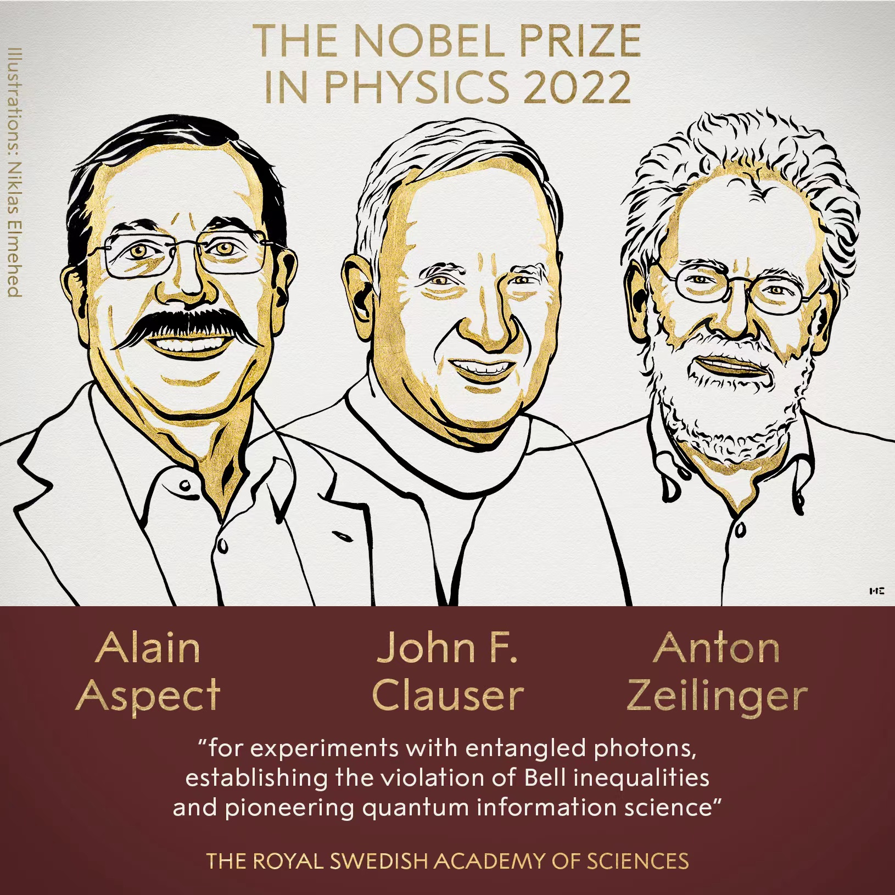

<!DOCTYPE html>
<html lang="zh-CN">

<head><meta charset="UTF-8">
<meta name="viewport" content="width=device-width">
<meta name="theme-color" content="#222" media="(prefers-color-scheme: dark)" />
<meta name="generator" content="Hugo 0.101.0" />
<link rel="shortcut icon" type="image/x-icon" href="/imgs/my_logo.png">
<link rel="icon" type="image/x-icon" href="/imgs/my_logo.png">
<link rel="icon" type="image/png" sizes="16x16" href="/imgs/my_logo.png">
<link rel="icon" type="image/png" sizes="32x32" href="/imgs/my_logo.png">
<link rel="apple-touch-icon" sizes="180x180" href="/imgs/my_logo.png">
<meta itemprop="name" content="CHSH不等式" />
<meta itemprop="description" content="一位喜欢撸猫的研究僧。" />
<meta itemprop="datePublished" ZgotmplZ />
<meta itemprop="dateModified" ZgotmplZ />
<meta itemprop="image" content="https://yuanlucas.github.io/imgs/my_avatar.png" />
<meta itemprop="keywords" content="量子力学" />

<meta property="og:type" content="article" />
<meta property="og:title" content="CHSH不等式" />
<meta property="og:description" content="一位喜欢撸猫的研究僧。" />
<meta property="og:image" content="/imgs/my_avatar.png" />
<meta property="og:image:width" content="312" />
<meta property="og:image:height" content="312" />
<meta property="og:image:type" content="image/jpeg/png/svg/jpg" />
<meta property="og:url" content="https://yuanlucas.github.io/posts/chsh%E4%B8%8D%E7%AD%89%E5%BC%8F/"/>
<meta property="og:site_name" content="klucas 的个人网站" />
<meta property="og:locale" content="zh-CN"/>
<meta property="article:author" content="klucas" />
<meta property="article:published_time" content="2022-10-09 00:00:00 &#43;0000 UTC" />
<meta property="article:modified_time" content="2022-10-09 00:00:00 &#43;0000 UTC" />


  <link type="text/css" rel="stylesheet" href="https://unpkg.com/@fortawesome/fontawesome-free@6.1.2/css/all.min.css" />
  <link type="text/css" rel="stylesheet" href="https://unpkg.com/animate.css@3.1.1/animate.min.css" />


  <link rel="stylesheet" href="/css/main.min.cfb74a9c22d487dd8b0fd652e295cf01eeacc4eb37ebf8fe1c06dc5cb24ccf73.css">
  <style type="text/css">
    .post-footer hr:after {
      content: "~ 我可是有底线的哟 ~";
    }
  </style>
  <script class="next-config" data-name="page" type="application/json">{"comments":false,"isHome":false,"isPage":true,"path":"chsh%E4%B8%8D%E7%AD%89%E5%BC%8F","permalink":"https://yuanlucas.github.io/posts/chsh%E4%B8%8D%E7%AD%89%E5%BC%8F/","title":"CHSH不等式"}</script>
  <script type="text/javascript">
  document.addEventListener('DOMContentLoaded', () => {
    var script = document.createElement('script');
      
    script.charset = "UTF-8";
    script.id      = "LA_COLLECT";
    script.src     = "https:\/\/sdk.51.la\/js-sdk-pro.min.js";
    script.async   = "true"
    script.onload = function() {
    
      LA.init({ id: "JlSteTd88WkbJxE2",ck: "JlSteTd88WkbJxE2", autoTrack:true });
    
    }

  document.head.appendChild(script);
});
</script>


  <title>CHSH不等式 - klucas 的个人网站</title>
  <noscript>
    <link rel="stylesheet" href="/css/noscript.css">
  </noscript>
</head>

<body itemscope itemtype="http://schema.org/WebPage"  class="use-motion" >
  <div class="headband"></div>
  <main class="main">
    <header class="header" itemscope itemtype="http://schema.org/WPHeader">
      <div class="header-inner">
<div class="site-brand-container">
  <div class="site-nav-toggle">
    <div class="toggle" aria-label="切换导航栏" role="button">
        <span class="toggle-line"></span>
        <span class="toggle-line"></span>
        <span class="toggle-line"></span>
    </div>
  </div>

  <div class="site-meta">

    <a href="/" class="brand" rel="start">
      <i class="logo-line"></i>
      <h1 class="site-title">klucas 的个人网站</h1>
      <i class="logo-line"></i>
    </a>
    
      <p class="site-subtitle" itemprop="description">记录学习生活</p>
  </div>

  <div class="site-nav-right">
    <div class="toggle popup-trigger">
      
      <i class="fa fa-search fa-fw fa-lg"></i>
    </div>
  </div>
</div>

<nav class="site-nav">
  <ul class="main-menu menu">
    <li class="menu-item menu-item-home">
      <a href="/" class="hvr-icon-pulse " rel="section"><i class="fa fa-home hvr-icon"></i>首页
      </a>
    </li>
    <li class="menu-item menu-item-about">
      <a href="/about.html" class="hvr-icon-pulse " rel="section"><i class="fa fa-user hvr-icon"></i>关于
      </a>
    </li>
    <li class="menu-item menu-item-archives">
      <a href="/posts/" class="hvr-icon-pulse " rel="section"><i class="fa fa-archive hvr-icon"></i>归档
      </a>
    </li>
    <li class="menu-item menu-item-search">
      <a role="button" class="popup-trigger hvr-icon-pulse"><i class="fa fa-search fa-fw hvr-icon"></i>搜索
      </a>
    </li>
  </ul>
</nav>
      </div>
      <div class="toggle sidebar-toggle" role="button">
  <span class="toggle-line"></span>
  <span class="toggle-line"></span>
  <span class="toggle-line"></span>
</div>
<aside class="sidebar">
  <div class="sidebar-inner sidebar-nav-active sidebar-toc-active">
    <ul class="sidebar-nav">
      <li class="sidebar-nav-toc">
        文章目录
      </li>
      <li class="sidebar-nav-overview">
        站点概览
      </li>
    </ul>
    <div class="sidebar-panel-container">
      
      <div class="post-toc-wrap sidebar-panel">
        <div class="post-toc animated"><nav id="TableOfContents">
  <ul>
    <li>
      <ul>
        <li><a href="#epr佯谬">EPR佯谬</a></li>
        <li><a href="#chsh不等式">CHSH不等式</a></li>
      </ul>
    </li>
  </ul>
</nav></div>
      </div>
      
      <div class="site-overview-wrap sidebar-panel">
        
<div class="site-author site-overview-item animated" itemprop="author" itemscope itemtype="http://schema.org/Person">
    
  <p class="site-author-name" itemprop="name">klucas</p>
  <div class="site-description" itemprop="description">一位喜欢撸猫的研究僧。</div>
</div>
<div class="site-state-wrap site-overview-item animated">
  <nav class="site-state">
    <div class="site-state-item site-state-posts">
      <a href="/posts/">
        <span class="site-state-item-count">24</span>
        <span class="site-state-item-name">日志</span>
      </a>
    </div>
    <div class="site-state-item site-state-categories">
      <a href="/categories/">
        <span class="site-state-item-count">4</span>
        <span class="site-state-item-name">分类</span>
      </a>
    </div>
    <div class="site-state-item site-state-tags">
      <a href="/tags/">
        <span class="site-state-item-count">15</span>
        <span class="site-state-item-name">标签</span>
      </a>
    </div>
  </nav>
</div>
<div class="links-of-social site-overview-item animated">


  <span class="links-of-social-item">
    <a href="https://github.com/YuanLucas" title="Github → https://github.com/YuanLucas" rel="noopener" class="hvr-icon-pulse" target="_blank">
      <i class="fab fa-github fa-fw  hvr-icon "></i>Github
    </a>
  </span>
  <span class="links-of-social-item">
    <a href="mailto:yuanzheheng@sina.com" title="E-Mail → mailto:yuanzheheng@sina.com" rel="noopener" class="hvr-icon-pulse" target="_blank">
      <i class="fa fa-envelope fa-fw  hvr-icon "></i>E-Mail
    </a>
  </span>
</div>
<div class="cc-license animated" itemprop="license">
  <a href="https://creativecommons.org/licenses/by-nc-sa/4.0/deed.zh" class="cc-opacity" rel="noopener" target="_blank" title="共享知识">
    
  </a>
</div>
<div class="links-of-blogroll site-overview-item animated">
  <div class="links-of-blogroll-title">
    <i class="fa fa-globe fa-fw"></i>友情链接
  </div>
  <ul class="links-of-blogroll-list">
    <li class="links-of-blogroll-item">
      <a href="https://www.guanjihuan.com/" title="https://www.guanjihuan.com/" target="_blank">关济寰</a>
    </li>
    <li class="links-of-blogroll-item">
      <a href="https://ericrzhu.com/" title="https://ericrzhu.com/" target="_blank">HRZ</a>
    </li>
  </ul>
</div>
      </div>
    </div>
    <div class="back-to-top animated" role="button" aria-label="">
      <i class="fa fa-arrow-up"></i>
      <span>0%</span>
    </div>
  </div>
</aside>
<div class="sidebar-dimmer"></div>
    </header>
    
    
  <div class="reading-progress-bar"></div>
  <a role="button" class="book-mark-link book-mark-link-fixed"></a>
<a href="https://github.com/YuanLucas" rel="noopener external nofollow noreferrer" target="_blank" title="Follow me on GitHub" class="exturl github-corner">
  <svg width="80" height="80" viewBox="0 0 250 250" aria-hidden="true"><path d="M0,0 L115,115 L130,115 L142,142 L250,250 L250,0 Z"></path><path d="M128.3,109.0 C113.8,99.7 119.0,89.6 119.0,89.6 C122.0,82.7 120.5,78.6 120.5,78.6 C119.2,72.0 123.4,76.3 123.4,76.3 C127.3,80.9 125.5,87.3 125.5,87.3 C122.9,97.6 130.6,101.9 134.4,103.2" fill="currentColor" style="transform-origin: 130px 106px;" class="octo-arm"></path><path d="M115.0,115.0 C114.9,115.1 118.7,116.5 119.8,115.4 L133.7,101.6 C136.9,99.2 139.9,98.4 142.2,98.6 C133.8,88.0 127.5,74.4 143.8,58.0 C148.5,53.4 154.0,51.2 159.7,51.0 C160.3,49.4 163.2,43.6 171.4,40.1 C171.4,40.1 176.1,42.5 178.8,56.2 C183.1,58.6 187.2,61.8 190.9,65.4 C194.5,69.0 197.7,73.2 200.1,77.6 C213.8,80.2 216.3,84.9 216.3,84.9 C212.7,93.1 206.9,96.0 205.4,96.6 C205.1,102.4 203.0,107.8 198.3,112.5 C181.9,128.9 168.3,122.5 157.7,114.1 C157.9,116.9 156.7,120.9 152.7,124.9 L141.0,136.5 C139.8,137.7 141.6,141.9 141.8,141.8 Z" fill="currentColor" class="octo-body"></path></svg>
</a>

<noscript>
  <div class="noscript-warning">Theme NexT works best with JavaScript enabled</div>
</noscript>
    <div class="main-inner post posts-expand">
      
  <div class="post-block">
  <article itemscope itemtype="http://schema.org/Article" class="post-content" lang="">
    <link itemprop="mainEntityOfPage" href="https://yuanlucas.github.io/posts/chsh%E4%B8%8D%E7%AD%89%E5%BC%8F/">
    <span hidden itemprop="author" itemscope itemtype="http://schema.org/Person">
      <meta itemprop="image" content="/imgs/my_avatar.png">
      <meta itemprop="name" content="klucas">
    </span>
    <span hidden itemprop="publisher" itemscope itemtype="http://schema.org/Organization">
      <meta itemprop="name" content="klucas">
      <meta itemprop="description" content="一位喜欢撸猫的研究僧。">
    </span>
    <span hidden itemprop="post" itemscope itemtype="http://schema.org/CreativeWork">
      <meta itemprop="name" content="CHSH不等式">
      <meta itemprop="description" content="  本文主要讨论CHSH不等式，算是Bell不等式的升级版吧。
相关文献：

CHSH提出的论文 

    https://journals.aps.org/prl/abstract/10.1103/PhysRevLett.23.880
    

">
    </span>
    <header class="post-header">
       <h1 class="post-title" itemprop="name headline">CHSH不等式 </h1> <div class="post-meta-container">
  <div class="post-meta-items">
    


<span class="post-meta-item">
  <span class="post-meta-item-icon">
    <i class="far fa-calendar"></i>
  </span>
  <span class="post-meta-item-text">发表于：</span>
  <time title="发表于：2022-10-09 00:00:00 &#43;0000 UTC" itemprop="dateCreated datePublished" datetime="2022-10-09 00:00:00 &#43;0000 UTC">2022-10-09</time>
</span>
    
    
  </div>
  <div class="post-meta-items">
    
<span class="post-meta-item" title="字数">
  <span class="post-meta-item-icon">
    <i class="far fa-file-word"></i>
  </span>
  <span class="post-meta-item-text">字数：</span><span>957</span>
</span>
    
<span class="post-meta-item" title="阅读">
  <span class="post-meta-item-icon">
    <i class="far fa-clock"></i>
  </span>
  <span class="post-meta-item-text">阅读：&asymp;</span>
  <span>2分钟</span>
</span>

    
<span class="post-meta-item" title="浏览">
  <span class="post-meta-item-icon">
    <i class="far fa-eye"></i>
  </span>
  <span class="post-meta-item-text">
  浏览：
  </span>
  <span class="waline-pageview-count" data-path="/posts/chsh%E4%B8%8D%E7%AD%89%E5%BC%8F/"><i class="fa fa-sync fa-spin"></i></span>
</span>

  </div>
  
</div>

    </header>
    <div class="post-body" itemprop="articleBody">
      
  <p>  本文主要讨论CHSH不等式，算是Bell不等式的升级版吧。</p></p>
<p>相关文献：</p>
<ol>
<li>CHSH提出的论文 
<a href="https://journals.aps.org/prl/abstract/10.1103/PhysRevLett.23.880" title="https://journals.aps.org/prl/abstract/10.1103/PhysRevLett.23.880" rel="noopener external nofollow noreferrer" target="_blank" class=" exturl">
    https://journals.aps.org/prl/abstract/10.1103/PhysRevLett.23.880
    <i class="fa fa-external-link-alt"></i>
</a></li>
</ol>
<hr>
<p>  先蹭个热度。</p>
<p></p>
<h2 id="epr佯谬">EPR佯谬</h2>
<p>  以Bell态为例，对于处于\(\ket{\Psi^+}\)的两个纠缠粒子</p>
<p>$$
\ket{\Psi^+}=\frac{1}{\sqrt{2}}(\ket{01}+\ket{10})
$$</p>
<p>如果将其放置于相隔很远很远的两地，Alice对粒子1进行测量，则粒子状态将坍缩：
$$
\ket{\Psi^+}\longrightarrow\ket{01}\ \text{or}\ \ket{10}
$$</p>
<p>  于是Alice能立即根据测量结果确定粒子2的状态。而且如果Bob对粒子2进行测量，就能根据测量结果直接确定系统此时的态，也就知道Alice的测量结果。考虑到不论Alice和Bob相隔多远，Bob都能通过测量立刻知道结果，那么说明量子纠缠能超光速传递信息。</p>
<p>  这是当年Einstein和其他两位科学家提出的EPR佯谬，不过当时他们提出的纠缠态就是通过坐标纠缠，体系的能量将趋向无穷，现实中并不存在。</p>
<blockquote>
<p>Suppose that A and B are spacelike separated systems. Then in a <em>complete</em> description of physical reality an action performed on system A must not modify the description of system B.</p>
<p style='text-align: right'> —— Einstein关于超光速作用的观点 </p>
</blockquote>
<p>  Einstein坚持认为这证明了量子力学的不完备性。他坚持决定论的观点，认为类空分开、无相互作用的两个粒子的状态分别由各自的变量确定，且各自的变量不能影响其他粒子的状态。量子力学认为世界是随机的，那是因为现有的理论和技术还不能发现隐变量。此即局域隐变量假设。</p>
<h2 id="chsh不等式">CHSH不等式</h2>
<p>  历史上Bell首先从局域隐变量假设出发，写出了Bell不等式，之后Clauser等人提出CHSH不等式，这个式子在更容易应用于实验检验。</p>
<p>假设信道两端分别有一个观测者Alice和Bob，对各自的粒子实施两种测量中的一种。
$$
\text{Alice}\bullet&mdash;&mdash;&mdash;&mdash;&mdash;&mdash;&mdash;&mdash;&mdash;&ndash;\bullet\text{Bob}
$$</p>
<p>Alice的测量：
$$
\hat{A}_1=\vec{n}_1\hat{\sigma}\ \text{or}\ \hat{A}_2=\vec{n}_2\hat{\sigma}
$$</p>
<p>Bob的测量：
$$
\hat{B}_1=\vec{m}_1\hat{\sigma}\ \text{or}\ \hat{B}_2=\vec{m}_2\hat{\sigma}
$$</p>
<p>\(\vec{n}\hat{\sigma}\)表示沿\(\vec{n}\)测量\(\hat{\sigma}\)，\(\vec{n}\)是单位向量。</p>
<p>于是有：
$$
\langle\hat{A}_1\otimes\hat{B}_1\rangle=\sum_{a_1=\pm1}\sum_{b_1=\pm1}a_1b_1\mathrm{P}(a_1,b_1)
$$</p>
<p>$$
\langle\hat{A}_1\otimes\hat{B}_2\rangle=\sum_{a_1=\pm1}\sum_{b_2=\pm1}a_1b_2\mathrm{P}(a_1,b_2)
$$</p>
<p>$$
\langle\hat{A}_2\otimes\hat{B}_1\rangle=\sum_{a_2=\pm1}\sum_{b_1=\pm1}a_2b_1\mathrm{P}(a_2,b_1)
$$</p>
<p>$$
\langle\hat{A}_2\otimes\hat{B}_2\rangle=\sum_{a_2=\pm1}\sum_{b_2=\pm1}a_2b_2\mathrm{P}(a_2,b_2)
$$</p>
<p>假设隐变量为\(\xi\equiv(\xi_1,\xi_2)\)，\(\xi_1,\xi_2\)分别对应粒子1和粒子2的隐变量。</p>
<p>于是有
$$
\mathrm{P}(a_i,b_j)=\sum_\xi\mathrm{P}(a_i|\xi)\mathrm{P}(b_j|\xi)\mathrm{P}(\xi)
$$</p>
<p>定义\(B\)
$$\begin{align}
B=&amp;\quad\langle\hat{A}_1\otimes\hat{B}_1\rangle+\langle\hat{A}_1\otimes\hat{B}_2\rangle+\langle\hat{A}_2\otimes\hat{B}_1\rangle-\langle\hat{A}_2\otimes\hat{B}_2\rangle\\
=&amp;\quad\sum_{a_1=\pm1}\sum_{b_1=\pm1}a_1b_1\sum_\xi\mathrm{P}(a_1|\xi)\mathrm{P}(b_1|\xi)\mathrm{P}(\xi)\\
&amp;+\sum_{a_1=\pm1}\sum_{b_2=\pm1}a_1b_2\sum_\xi\mathrm{P}(a_1|\xi)\mathrm{P}(b_2|\xi)\mathrm{P}(\xi)\\
&amp;+\sum_{a_2=\pm1}\sum_{b_1=\pm1}a_2b_1\sum_\xi\mathrm{P}(a_2|\xi)\mathrm{P}(b_1|\xi)\mathrm{P}(\xi)\\
&amp;-\sum_{a_2=\pm1}\sum_{b_2=\pm1}a_2b_2\sum_\xi\mathrm{P}(a_2|\xi)\mathrm{P}(b_2|\xi)\mathrm{P}(\xi)
\end{align}$$</p>
<p>可以将\(\sum_\xi\)和\(\sum_{a_i=\pm1}\sum_{b_i=\pm1}\)交换次序：
$$\begin{align}
B=\sum_\xi\mathrm{P}(\xi)[&amp;\sum_{a_1=\pm1}a_1\mathrm{P}(a_1|\xi)\sum_{b_1=\pm1}b_1\mathrm{P}(b_1|\xi)\\
+&amp;\sum_{a_1=\pm1}a_1\mathrm{P}(a_1|\xi)\sum_{b_2=\pm1}b_2\mathrm{P}(b_2|\xi)\\
+&amp;\sum_{a_2=\pm1}a_2\mathrm{P}(a_2|\xi)\sum_{b_1=\pm1}b_1\mathrm{P}(b_1|\xi)\\
-&amp;\sum_{a_2=\pm1}a_2\mathrm{P}(a_2|\xi)\sum_{b_2=\pm1}b_2\mathrm{P}(b_2|\xi)]
\end{align}$$</p>
<p>定义
$$
X_1=\sum_{a_1}a_1\mathrm{P}(a_1|\xi)\in[-1,1]
$$</p>
<p>$$
X_2=\sum_{a_2}a_2\mathrm{P}(a_2|\xi)\in[-1,1]
$$</p>
<p>$$
Y_1=\sum_{b_1}b_1\mathrm{P}(b_1|\xi)\in[-1,1]
$$</p>
<p>$$
Y_1=\sum_{b_2}b_2\mathrm{P}(b_2|\xi)\in[-1,1]
$$</p>
<p>于是有：
$$
B=\sum_\xi\mathrm{P}(\xi)\left[X_1Y_1+X_1Y_2+X_2Y_1-X_2Y_2\right]
$$</p>
<p>两边取绝对值，再由不等式：
$$
\left|\sum_\xi A_\xi B_\xi\right|\le\sum_\xi|A_\xi||B_\xi|
$$</p>
<p>于是有：
$$\begin{align}
|B|&amp;=\left|\sum_\xi\mathrm{P}(\xi)\left[X_1Y_1+X_1Y_2+X_2Y_1-X_2Y_2\right]\right|\\
&amp;\le|X_1||Y_1+Y_2|+|X_2||Y_1-Y_2|\\
&amp;\le|Y_1+Y_2|+|Y_1-Y_2|\\
&amp;\le2
\end{align}$$</p>
<p>得到
$$
\boxed{\left|\langle\hat{A}_1\otimes\hat{B}_1\rangle+\langle\hat{A}_1\otimes\hat{B}_2\rangle+\langle\hat{A}_2\otimes\hat{B}_1\rangle-\langle\hat{A}_2\otimes\hat{B}_2\rangle\right|\le2}
$$</p>
<p>即CHSH不等式。</p>

    </div>
    <footer class="post-footer">
      

<div class="post-tags">
  
    <a href="/tags/%e9%87%8f%e5%ad%90%e5%8a%9b%e5%ad%a6">
    量子力学
  </a>
</div>

<div class="addthis_inline_share_toolbox" style="text-align: center;"></div>
<hr/>


<div class="post-nav">
  <div class="post-nav-next post-nav-item">
    <a href="https://yuanlucas.github.io/posts/fock-state/" rel="next" title="Fock态">
      <i class="fa fa-chevron-left"></i> Fock态
    </a>
  </div>
  <div class="post-nav-prev post-nav-item">
    <a href="https://yuanlucas.github.io/posts/%E9%87%8F%E5%AD%90%E5%8A%9B%E5%AD%A6%E4%B8%AD%E7%9A%84%E6%B5%8B%E9%87%8F%E7%90%86%E8%AE%BA/" rel="prev" title="量子力学中的测量理论">
      量子力学中的测量理论
      <i class="fa fa-chevron-right"></i>
    </a>
  </div>
</div>
    </footer>
  </article>
</div>
<div class="post-comments">
  <div class="comment-head">
    <div class="comment-headline">
      <i class="fas fa-comments fa-fw"></i>
      <span>评论交流</span>
    </div>
    <div class="comment-switch">
      <span class="first-comment">Giscus</span>
      <span class="switch-btn "></span>
      <span class="second-comment">Waline</span>
    </div>
  </div>
  <div class="comment-wrap">
  
    <div><div class="comment-loading">
  <i class="fa fa-sync fa-spin"></i>
</div><div class="giscus-container"></div>
    </div>
    <div><div class="comment-loading">
  <i class="fa fa-sync fa-spin"></i>
</div><div class="waline-container"></div>
    </div>
  </div>
</div>

    </div>
  </main>
  <footer class="footer">
    <div class="footer-inner">
<div class="copyright">
  &copy;
  <span itemprop="copyrightYear">
    2022 - 2023
  </span>
  <span class="with-love">
    <i class="fa fa-heart"></i>
  </span>
  <span class="author" itemprop="copyrightHolder">klucas</span>
</div>

<div class="powered-by">
  由 <a href='https://gohugo.io' target='_blank'>Hugo</a> &amp; <a href='https://github.com/hugo-next/hugo-theme-next' target='_blank'>Hugo NexT.Gemini</a> 强力驱动
</div>


    </div>
  </footer>

  <script type="text/javascript" src="https://unpkg.com/animejs@3.2.1/lib/anime.min.js" defer></script>
  <script type="text/javascript" src="https://unpkg.com/mathjax@3.2.0/es5/tex-mml-chtml.js" defer></script>

<script class="next-config" data-name="main" type="application/json">{"artalk":{"cfg":{"placeholder":"请文明发言，谢谢！","server":null,"site":"默认站点"},"css":{"file":"dist/Artalk.css","name":"artalk","version":"2.3.4"},"js":{"file":"dist/Artalk.js","name":"artalk","version":"2.3.4"}},"bookmark":{"color":"#222","enable":true,"save":"manual"},"copybtn":true,"darkmode":true,"giscus":{"cfg":{"category":"Announcements","categoryid":null,"inputposition":"top","mapping":"title","repo":"username/repo_name","repoid":null,"theme":"preferred_color_scheme"},"js":"https://giscus.app/client.js"},"hostname":"https://yuanlucas.github.io","lang":"zh-CN","lazyload":false,"livere":{"js":"https://cdn-city.livere.com/js/embed.dist.js"},"motion":{"async":true,"enable":true,"transition":{"collheader":"fadeInLeft","postblock":"fadeIn","postbody":"fadeInDown","postheader":"fadeInDown","sidebar":"fadeInUp"}},"root":"/","scheme":"Gemini","sidebar":{"display":"post","offset":12,"padding":18,"position":"left","width":256},"utterances":{"cfg":{"issueterm":"pathname","label":"comments","repo":"username/repo-name","theme":"preferred-color-scheme"},"js":"https://utteranc.es/client.js"},"vendor":{"plugins":"unpkg","router":"https://unpkg.com"},"version":"4.1.0","waline":{"cfg":{"emoji":false,"imguploader":false,"pageview":true,"placeholder":"请文明发言","requiredmeta":["nick","mail"],"serverurl":null,"wordlimit":200},"css":{"alias":"waline","file":"dist/waline.css","name":"@waline/client","version":"2.6.1"},"js":{"alias":"waline","file":"dist/waline.js","name":"@waline/client","version":"2.6.1"}}}</script>


<script type="text/javascript" src="/js/main.min.9103b1446281e1f0767c633c3b1acf765516d45aa4c773fd90efd5d2f9011a42.js" defer></script>
</body>

</html>